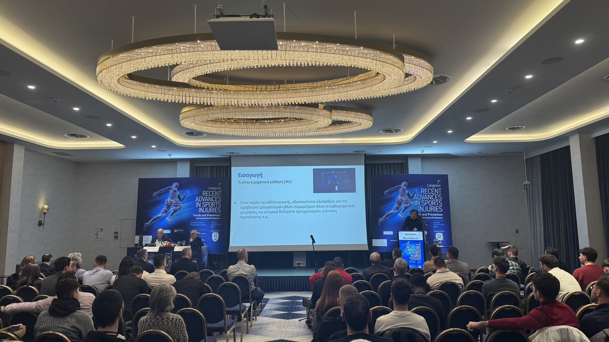
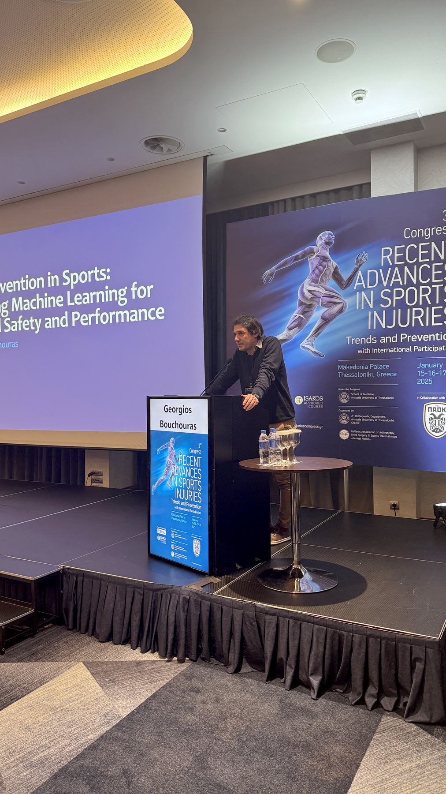
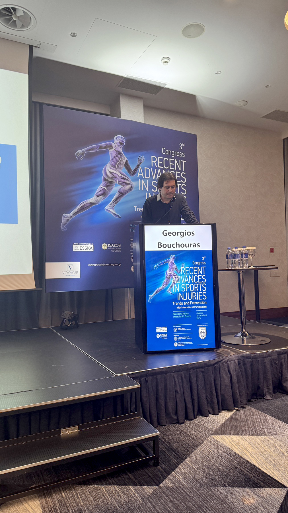
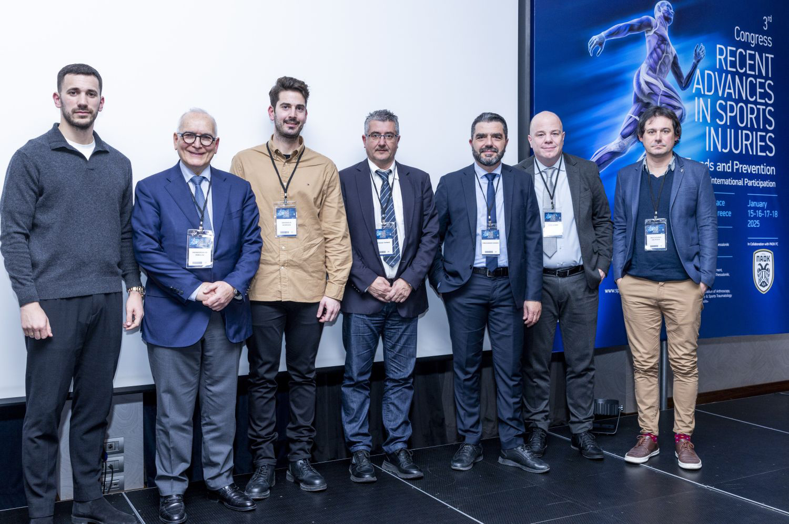
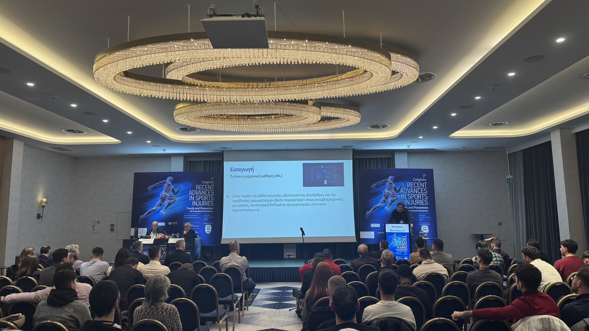
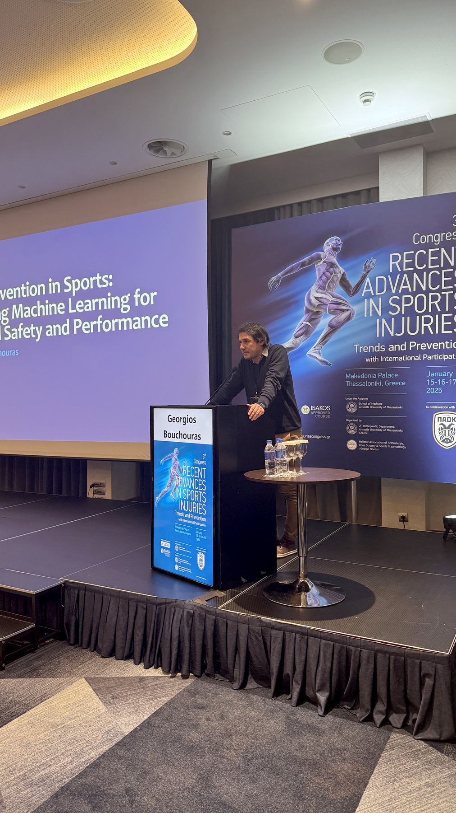
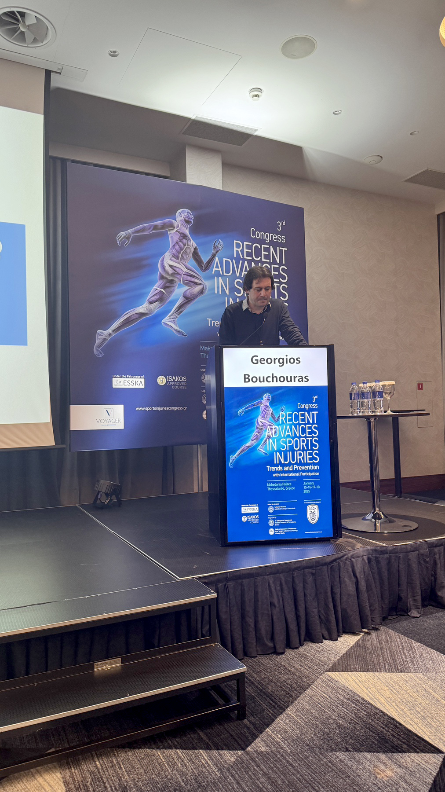
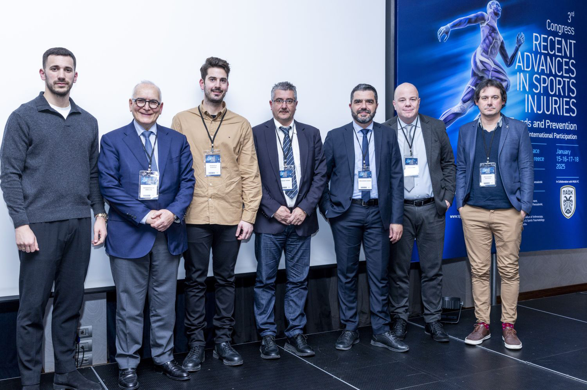

Georgios Bouchouras, PhD
Senior Lecturer in Biomechanics
Metropolitan College, in collaboration with University of East London
Biomechanics | Gait Analysis | Ontology Engineer | Prompt Engineer | AI | Recurrent Neural Networks
Machine Learning for Sports Injury Prediction: RNNs and IoT Data'
Posted on January 16, 2025
 







I had the honor of speaking at the 3rd Congress “Recent Advances in Sports Injuries: Trends and Prevention,” organized by the 2nd Orthopaedic Department of Aristotle University of Thessaloniki in collaboration with the Hellenic Association of Arthroscopy, Knee Surgery & Sports Traumatology “George Noulis” and PAOK FC. During my talk, I highlighted how machine learning, particularly Recurrent Neural Networks (RNNs), can play a pivotal role in sports injury prediction. I focus into the RNN architecture, showcasing its ability to process sequential data—perfect for analyzing metrics collected from wearables and IoT devices. These technologies enable real-time monitoring of athletes, capturing critical data such as biomechanical patterns, physiological responses, and external factors.
By leveraging this continuous stream of information, RNN algorithms can uncover patterns that signal potential injuries, allowing for timely interventions to protect athletes health and optimize their performance. This innovative approach has the potential to redefine injury prevention in sports medicine. I extend my heartfelt thanks to the organizers for creating such an exceptional platform to share knowledge and collaborate with experts in the field. Their dedication to advancing research and innovation in sports medicine is truly commendable. It was an inspiring experience, and I look forward to continuing my efforts to bring machine learning solutions to the forefront of sports injury prevention.